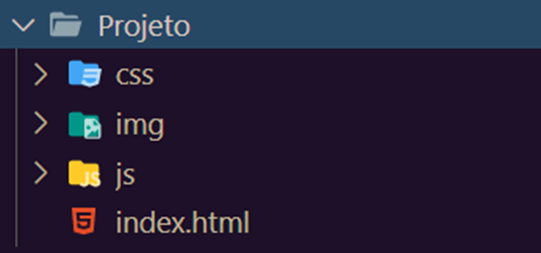
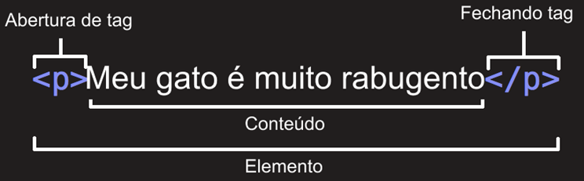
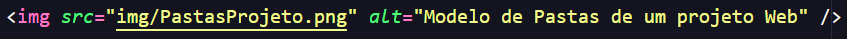

Para todo projeto de software existem algumas recomendações, ao construir um Web Site ou uma Aplicação Web vamos utilizar vários tipos de arquivos diferentes.
Nomes de arquivos e pastas dever ser escritos em letras minúsculas, sem espaços e sem caracteres especiais.
É recomendado que exista uma página inicial dentro de um arquivo chamado index.html
Dentro da pasta do projeto é recomendado que sejam criadas mais algumas pastas com a finalidade de organizar os arquivos do projeto.
A linguagem HTML (Hypertext Markup Language ) tem o objetivo de formatar textos através de marcações especiais denominadas tags. Documentos HTML são arquivos de texto ASCII. Todos os arquivos devem possuir a extensão .html
O HTML não faz diferença entre letras minúsculas ou maiúsculas em suas marcações, mas recomenda-se usar as tags em letras minusculas
A sintaxe geral de uma tag é :

E de modo geral as tags aparecem em pares.
As tags podem possuir atributos, cada atributo tem um nome e uma funcao diferente. Nas figura abaixo temos a tag img com o atributo src que serve para indicar a origem da imagem e a tag alt onde escrevemos um texto alternativo que aparece na tela quando a imagem não é carregada.
Na figura abaixo temos a estrutura básica de um arquivo HTML

Caso queira saber mais clique na imagem abaixo ou leia o qrcode
Para colocar um icone na página o ideal é ter um arquivo de 16 x 16 pixels ou 32 x 32 pixels e utilizamos a tag link dentro do head.